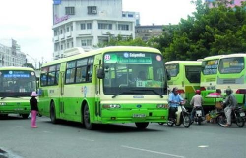
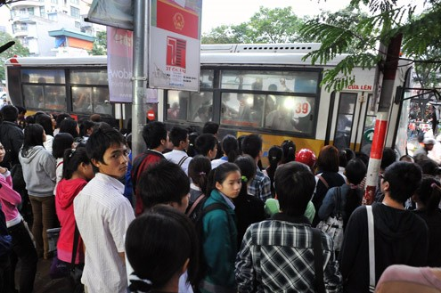
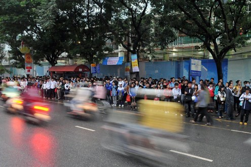

Địa điểm khảo sát
• Những điểm chúng ta có thể khảo sát đạt kết quả tốt ở tp.HCM này phải là những nơi thật sự tập trung đông dân cư:
• Các bến xe: Bến xe miền Đông, bến xe miền Tây, bến xe Bến Thành, …
• Các bệnh viện: Chợ Rẫy, Từ Dũ, Nhi đồng, ĐK Thủ Đức, Gia Định, …
• Các trường Đại Học: KHTN, Nông Lâm, Bách Khoa, KH XH&NV, Đại học Công Nghiệp, SPKT, …
• Các trung tâm thương mại, siêu thị lớn.
• Các khu vui chơi, giải trí.
Phương án khảo sát
o Cách thức khảo sát:
Chúng ta có thể có 2 phương án khảo sát:
• Khảo sát trực tiếp mọi người tại những điểm khảo sát đó bằng những phiếu khảo sát theo mẫu.
• Khảo sát online qua mạng xã hội facebook hay là các trang phép khảo sát online.
o Nội dung khảo sát:
Sẽ khảo sát những mục dưới đây, nội dung trong mục sẽ được cập nhật 1 form riêng:
• Tuổi tác
• Nghề nghiệp
• Phương tiện đi lại chủ yếu
• Tần suất đi xe buýt (theo tuần hay tháng)
• Thời gian đợi xe
• Thái độ phục vụ
• Giá vé có phù hợp không
• Thường làm gì với vé xe buýt
• Hình thức thường thanh toán (tiền mặt, thẻ)
• Cảm thấy việc thanh toán xe buýt hiện nay như thế nào
• Có tán thành hay không việc dùng thẻ điện tử thanh toán.
o Thống kê:
Chúng ta có thể thống kê theo mức độ đánh giá hài lòng hay không hài lòng. Ít nhất 1000 người.



Địa điểm lắp đặt máy
Mục tiêu của việc lắp đặt máy là dùng để giải quyết nhanh việc mua vé ở những trạm mà người dân có thể một lúc lên vài chục người.
Do đó những điểm lắp đặt phải là những nơi đông dân như những địa điểm khảo sát ở trên.
Ta có thể ưu tiên lắp đặt trước ở các Bến xe, Bệnh viện hay tại các trường đại học vì số lượng người tập trung và nhu cầu đi xe buýt ở đây rất cao.
Các chức năng máy cần có
1. Bán vé
Người dùng phải chọn đối tượng để mua vé ( có 3 mức giá : 2.000đ, 5.000đ, 6.000đ )
Mà mình không biết là vậy thì máy có cần xác nhận đối tượng để bán vé không ? Hay là lên xe khách vẫn phải trình thẻ học sinh , thẻ sinh viên vậy ? Nếu có cách nào mà máy xác nhận được thì lúc soát vé đỡ tốn thời gian hơn .
2. Đăng nhập, quản lý tài khoản ( Có thể bỏ qua chức năng này vì số lượng người mua vé nhiều , sẽ phải đợi lâu )